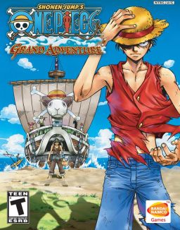

Monkey D. Luffy, also known as "Straw Hat" Luffy, is a fictional character and the protagonist in the Japanese manga series One Piece created by Eiichiro Oda. He fearlessly pursues the legendary treasure of the late Gol D. Roger in order to become the new Pirate King. He believes that being the Pirate King means having the most freedom in the world. He fights multiple antagonists, and aids and befriends the inhabitants of several islands on his journey.
Luffy is best known for:
| Image | Name | Description |
|---|---|---|
|
One Piece Anime | Monkey D. Luffy is the captain of the Straw Hat Pirates and the main protagonist of the One Piece series. He sets sail to achieve his dream to acquire the legendary treasure of one piece and to become the king of the pirates. |
|
One Piece - Film Red | The story is set on the "Island of Music" Elegia, where Uta, the world's greatest diva, holds her first ever live concert and reveals herself to the public. Luffy along with his crew, pirates, Marines and fans from across the world gather to enjoy Uta's voice, which has been described as "otherworldly". |
|  | One Piece: Grand Adventure | In One Piece: Grand Adventure, a video game based on the One Piece series, Luffy plays a central role as a main character and captain of the Straw Hat Pirates. The game features an Adventure Mode, where players can follow Luffy's journey as he explores various islands, recruits crew members, and battles opponents from the anime. |